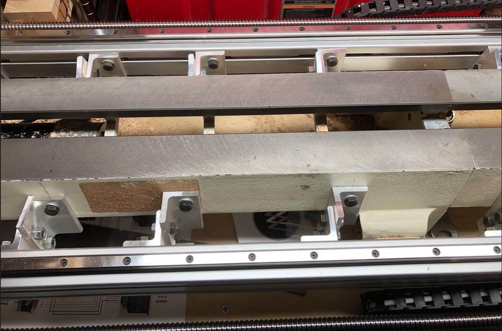
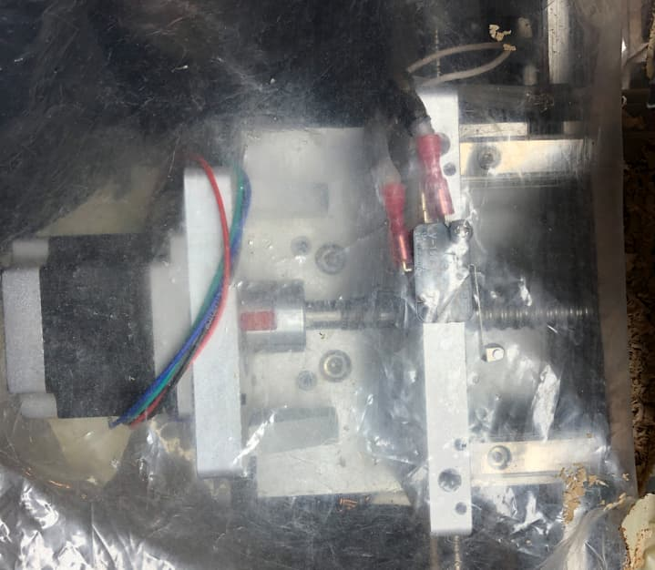
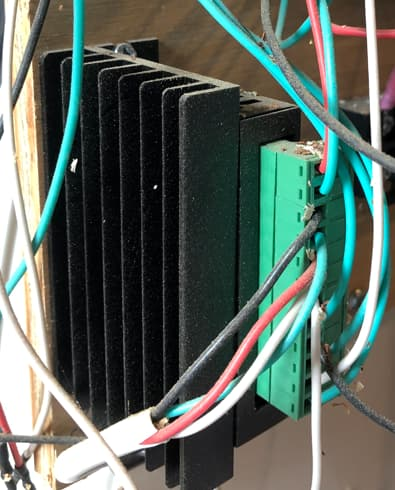
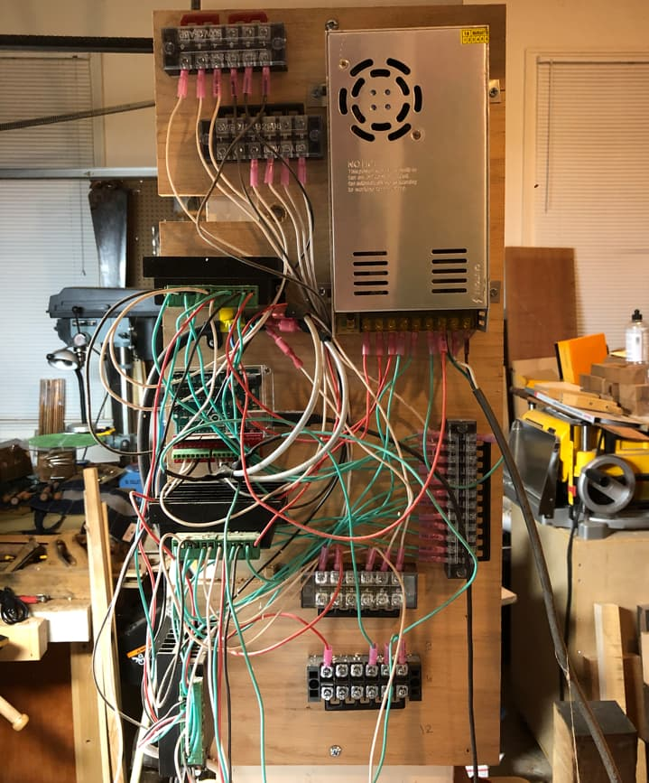
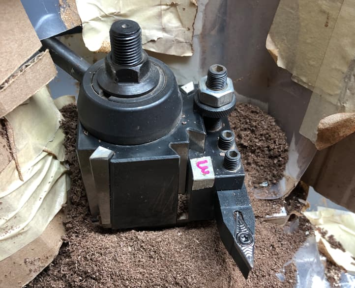
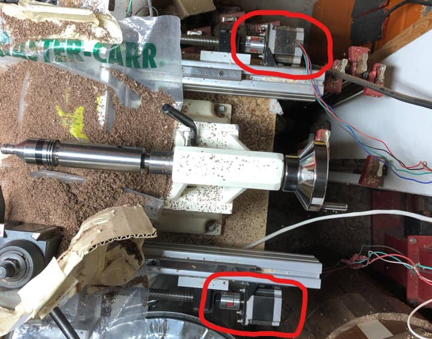

This project retrofits CNC electronics onto a JET 1220 wood lathe. It was made to automatically create wooden rolling pins.

The lathe has parrallel rails on each side with long ball screws to move the carriage back and forth. The carriage also has a stepper to move it in and out of the workpiece. (It is also protected from chips with a plastic cover)
 Each stepper has its own driver, mounted to a control board along with an arduino and a power supply. The arduino sends Gcode over to the steppers from a nearby computer. There is also a quick change toolpost to easily swap any cutter you need.
   